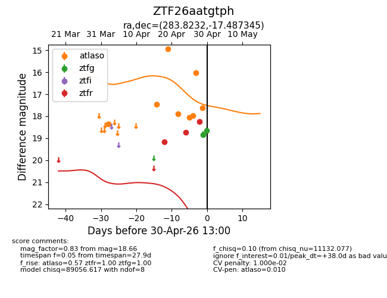
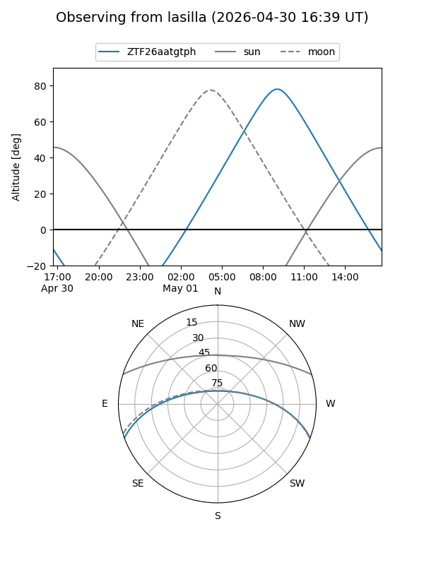
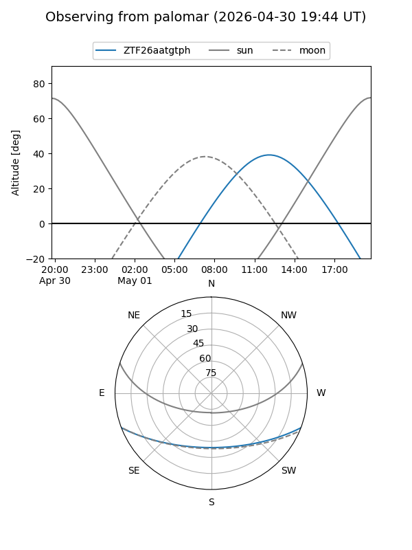
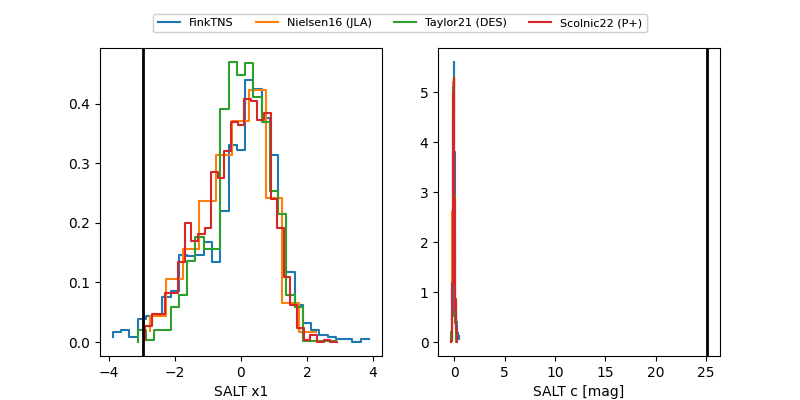

ZTF26aatgtph
Target ZTF26aatgtph at 2026-04-30 13:06
Aliases and brokers:
FINK: link
Lasair: link
ALeRCE: link
alt names
ZTF26aatgtph (ztf,fink_ztf)
Coordinates:
equatorial (ra, dec) = 283.8232,-17.48735
equatorial (HMS+DMS) = 18:55:17.57,-17:29:14.44
galactic (l, b) = (17.6748,-8.70216)
Flags:
likely cv
Photometry:
last atlaso=17.62, ztfg=18.66, ztfr=18.23
8 atlaso, 2 ztfg, 3 ztfr detections
Lightcurve

Visibility


Additional plots
